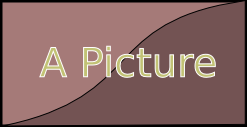

This article provides a short introduction about how to write documents
for this site. We appreciate any volunteers trying to help us writing
documentation for LinuxSampler and friends.
At a Glance
There are plenty of documentation systems out there. Why did we need yet
another one? Most of those systems require you to learn some kind of custom,
exotic markup language to write documents with them. Then there are
WYSIWG
systems which require to maintain user accounts for people who want to
add or change content and are suffering under periodic security issues,
which in turn require frequent software updates to avoid the site getting
compromised. And last but not least; they don't deliver everything you
need and are often hard to extend or to be customized.
 This site is using one of the best, most flexible, and well known markup
languages as basis for writing documents:
HTML. But obviously there
are some caveats to use HTML as-is. Most notably it requires you to write
a lot of monothonic, superfluous things again and again just to achieve
simple things. And on the other hand it requires authors to invest a
substantial amount of time learning the numerous required aspects of HTML
and CSS.
Fortunately; you don't have to. You don't need to have any precognition
of HTML or CSS to write articles for this site.
This site is using one of the best, most flexible, and well known markup
languages as basis for writing documents:
HTML. But obviously there
are some caveats to use HTML as-is. Most notably it requires you to write
a lot of monothonic, superfluous things again and again just to achieve
simple things. And on the other hand it requires authors to invest a
substantial amount of time learning the numerous required aspects of HTML
and CSS.
Fortunately; you don't have to. You don't need to have any precognition
of HTML or CSS to write articles for this site.
Here are some of the features of our documentation system in overview:
-
Articles are created as plain and extremely simple HTML files, which
do not neccessarily require any previous knowledge in HTML
(or even CSS) by article authors.
-
The article's HTML file can immediately be previewed on the author's
local computer by just opening it with a browser. No upload or web
application required while creating or editing articles.
-
Once the article is ready, it can be submitted to our server, which
will then be filled up automatically by our software to generate our
documentation site. The software performs all redundant work that is
usually required to build websites with regular HTML files. This
automatic generation supports the following features:
-
Automatic generation of the site's article structure. The site's
structure can very easily be changed, by just moving around the
article source HTML files in the article source repository. No single
article needs to be edited for any site structure changes.
-
Automatic correction of links and image references in articles,
i.e. on site structure changes, trivial input errors or file type
changes. No user interventation required.
-
Automatic syntax highlighting of source code snippets in articles,
so the author can concentrate simply on the content and correctness
of his source code snippets. The software
generates the correct look of your source code examples for you.
-
Automatic generation of site's navigation bar, article's table of
contents and article section IDs for the entire website.
-
Automated generation of tooltips for links to other articles and
technical terms or abbreviations.
-
Automatic detection of fundamental errors in articles. Our system
tries to correct any kind of issues automatically as much and as far
as possible, in order to avoid bothering article authors with any kind of trivial
things. However there are cases where it simply cannot resolve
issues with individual articles on its own, even not by "guessing".
In this case it will notify the author(s) about the precise problem,
so they are aware about it and asks them to do the manual correction.
-
This site's software is written in native C++, it generates and
updates the entire site extremely fast. And since it is only
updating the site's files when some input article changed, it can
also be run as unpriviliged user and/or in a sandbox environment.
-
The site's template is a regular, static HTML file. So you can edit and
test the site's overall look with a regular browser. No need to comment
in/out things just for changing the general look of the site.
-
Extensible: all articles are still real HTML after all. So you can
easily add any kind of HTML, CSS and Java Script on your own for
individual articles of yours if really required. So it is not neccessarily
required to change our site's software just to add some kind of customization
for some of your articles.
Enough said, let's dive in and actually see how to create an article.
A Base Article
Creating a new article for this site is as simple as creating a new text
file and adding following text:
My First Article
This is the first paragraph.
This would already be sufficient to be a valid document and all the rest
would automatically be added by our site's software for you. It is
recommended though to start new documents always with following template
instead:
<html>
<head>
<title>??article-title??</title>
<meta name="author" content="??author-name??">
<meta name="description" content="??short-description??">
<link rel="stylesheet" href="http://doc.linuxsampler.org/css/preview.css">
<script type="text/javascript" src="http://doc.linuxsampler.org/js/preview.js"></script>
</head>
<body>
??article-headline??
This is the first paragraph.
</body>
</html>
Add this to an empty text file and rename the file to a HTML file with
arbitrary name like my_first_article.html.
That template above has the advantage that you can simply open that file
locally on your machine with your web browser and immediately preview how
the article will look like on our website while you are writing the
article. So you don't need to upload it somewhere for that purpose.
Don't worry, you don't need to understand everything that's there. All you
need to know is described next.
Article Short Description
You may provide a short description of your article with
??short-description??. This is completely optional. It is used
for example when your article is linked from another article. In that
case the reader may i.e. move the mouse pointer over the link and a tooltip
will popup with the document's title and the short description as summary
of what that article is about.
Article Title
With ??article-title?? you provide the title of the article,
which will be displayed in the browser's window title bar and it will also
be displayed on our site's horizontal navigation bar, which you can find
at the top of each page. It will also be used by our site to auto generate
a directory structure for the generated website, thus it also has an
impact on the final URL of your article.
With ??article-headline?? you define the prominent headline
shown at the very beginning of the article.
In most cases ??article-title?? and
??article-headline?? will probably be the same text for one
article. In that case you may also omit either one of the two. The
software will then automatically add the missing headline or title for
you.
In some few cases you may want to have more control over the aspects of
the article's title, its final URL path and what shall be displayed in
the navigation bar. In this case you may use some additional optional tags
in your document's head like this:
<html>
<head>
<title>??article-title??</title>
<urlpath>??article-path??</urlpath>
<navpath>??nav-bar-name??</navpath>
<meta name="author" content="John Smith">
<meta name="description" content="This is my first article.">
<link rel="stylesheet" href="http://doc.linuxsampler.org/css/preview.css">
<script type="text/javascript" src="http://doc.linuxsampler.org/js/preview.js"></script>
</head>
<body>
??article-headline??
This is the first paragraph.
</body>
</html>
In this case, ??article-title?? is now only used for displaying the
article's name in the browser's title bar and in case the reader
bookmarks your article with his browser.
??article-path?? is the directory
name where the final, generated article shall be place at. Accordingly
this also changes the final URL to the article. And last but not least,
??nav-bar-name?? defines the name of your article as it shall
be displayed on the site's navigation bar. As said, these additional tags
are completely optional. In most cases you should be fine by just providing
a <title> and/or <h1> with your
article.
Article Authors
Also completely optional is providing ??author-name?? as
name(s) of the person(s) who wrote the article. If you provide that information,
then the name will be displayed in the footer section of the article on
our site. Don't be shy and add your name to get credited for your work.
If you change an already existing article, you may simply add your name
by adding a comma like so:
<meta name="author" content="John Doe, Bob Fox, Mary Smith">
The author information may also be useful for people to contact the person
who wrote the original article in order to ask some questions about it.
Headlines
All headlines in your article are defined with regular HTML headline
tags. The following three headline types are available:
??article-headline??
??sub-headline??
??sub-sub-headline??
This is the corresponding look for each one of the three headline types:
This is a <h1> headline
This is a <h2> headline
This is a <h3> headline
It's completely up to you which one of those three headline types to use,
how often you use them and where. All of them will be taken by the site's
software to automatically generate a table of content of your Article,
which will be shown at the left side next to your article on our site.
Once your article is uploaded to our site, IDs for the individual
headlines will automatically be generated for you. If for example you had
somewhere in your article a headline called "Conclusion of Topic", then
this particular paragraph of your article may be directly linked to from
other articles or other sites with an URL like
http://doc.linuxsampler.org/path/to/your/article/#conclusion_of_topic.
If you want to override this behavior, because you rather want to use your
own ID for a paragraph of your article, then simply set the desired ID with
your headline:
Conclusion of topic
Paragraphs
You should wrap each continous text block of your article in between
a paragraph tag pair like:
This is a paragraph. All the text in a paragraph is combined to one continous
text block. You may add as much text as you want to a paragraph of your article,
but better separate you article into logical parts of separate paragraphs. So to start a
new paragraph, wrap the next text block into a new pair of paragraph tags.
This is the next paragraph. There will be an empty line between this paragraph and
the previous and next paragraph, to separate paragraphs visually from each other.
Which would look like:
This is a paragraph. All the text in a paragraph is combined to one continous
text block. You may add as much text as you want to a paragraph of your article,
but better separate you article into logical parts of separate paragraphs. So to start a
new paragraph, wrap the next text block into a new pair of paragraph tags.
This is the next paragraph. There will be an empty line between this paragraph and
the previous and next paragraph, to separate paragraphs visually from each other.
Wrapping paragraphs into ??text??
Pictures
To display i.e. screen shots, figures and other kinds of images in your
article, simply place the picture file in the directory where your
current article's file is located at. Then add the image to your article
with an 
Stand-Alone Pictures
To place a picture on
its own between two text paragraphs, simply place the 
This is the first paragraph. Just before the picture.
This is the next paragraph, just after the picture.
The optional ??footnote?? adds a footnote text just below the
image and the optional ??tooltip-text?? defines a text which
will popup if the reader points his mouse over the image. The previous
example would look like this:
This is the first paragraph. Just before the picture.

This is the next paragraph, just after the picture.
You also don't have to care about the size of the image. If the image
resolution is largen than the width of the article would currently require
on the user's screen, then the image will automatically be downscaled to
fit the width of the article. It is recommended though to keep the width
of images approximately below 1200px, just to not waste too much repository space
(that is disk space) and network bandwidth.
Embedded Pictures
Sometimes however it looks nicer to have a picture embedded directly inside a
paragraph of text and let that text float around that picture, especially
when using rather small images. To achieve that, simply place the image
tag inside the paragraph of your HTML file like:
This is some text of a paragraph. In this particular case, this text will
float around the picture. The rest of this text is just repeating,
repeating, repeating, repeating, repeating, repeating, repeating,
repeating, repeating, repeating, repeating, repeating, repeating,
repeating, repeating, repeating, repeating, repeating, repeating,
repeating, repeating, repeating, repeating, repeating, repeating,
repeating, repeating, repeating, repeating, repeating, repeating,
repeating, repeating, repeating, repeating, repeating, repeating,
repeating, repeating, repeating, repeating, repeating, repeating,
repeating, repeating, repeating, repeating, repeating, repeating,
repeating, repeating, repeating, repeating, repeating, repeating.
Which would look like this:
This is some text of a paragraph. In this particular case, this text will
float around the picture. The rest of this text is just repeating,
repeating, repeating, repeating, repeating, repeating, repeating,
repeating, repeating, repeating, repeating, repeating, repeating,
repeating, repeating, repeating, repeating, repeating, repeating,
repeating, repeating, repeating, repeating, repeating, repeating,
repeating, repeating, repeating, repeating, repeating, repeating,
repeating, repeating, repeating, repeating, repeating, repeating,
repeating, repeating, repeating, repeating, repeating, repeating,
repeating, repeating, repeating, repeating, repeating, repeating,
repeating, repeating, repeating, repeating, repeating, repeating.
As you can see, no special knowledge in i.e. HTML or CSS required to achieve
such things very easily.
Unique Pictures
Once your article and its picture(s) are uploaded to our server, our
system will automatically check that all images on our entire site have
unique and unambiguous file names, no matter at which directory they
are stored to exactly. The "file name" that is checked in this case, is
actually the picture's file name without its file type extension
(i.e. without ".png", ".jpg", ".gif", etc. at its end). There are two reasons for this:
- Site Structure Changes:
After a while, the structure on a website changes. Certain articles
are moved to completely different directories and some article's may
reference pictures that were already added and used by other articles before.
Which makes sense of course, why saving the exact same picture 10 times
under different image files if you can just reference that already existing image file from your new article?
Now when those articles and/or the images move to different locations,
the image references within such articles might turn to dead references.
Our system automatically detects this and corrects the references in
articles to any kind of image file automatically, without requiring
any user intervention. So we can change the structure of the website
at any time without having to update any article file.
- File Type Changes:
Sometimes it happens that a picture needs to be replaced with a
picture in a different file format. For example the original picture
was added in .jpeg format to have a very small file size, but later on
some kind of transparency is required for the picture, which is not
supported by JPEG. In this case the picture would i.e. be updated
and replaced with a .png image file. Our system also detects this and
automatically updates all references to that image file in all articles
to the precise new name of the image file. Again, no user intervention
required.
But for the system to be able to that automatically, it requires all
image files to have unique file names, like described above. If you try
to upload a new image file to our system which uses a file name that was
already taken by another image, then you will automatically be notified by
our system via email, asking you to rename one of the image files.
Source Code
You might need to post example source code in some of your articles. This
is very simple to do. Just wrap your source code into a pair of
<code> tags like this:
<code>
??source-code??
</code>
Syntax highlighting is automatically generated for you, according to the
programming language or markup language used by you. That way you don't
have to waste time on how to display source code nicely, and rather
concentrate on the content of your article. Like with images, you can
decide in which context the source code shall appear in your article,
as described next.
Automatic syntax highlighting is currently available for the
If you need another source code language, just tell
Christian
and he will add the required module for any kind of language
(even the most exotic one) on our server in short time.
Stand-Alone Code
If you put your code block outside of paragraphs, that is between
paragraph blocks in your HTML file, then the source code will also appear
on its own between the paragraph blocks. Here is an example for the
NKSP script language.
Paragraph just before the source code block.
<code>
on init
@foo := "A message"
message(@foo)
end on
</code>
Next paragraph just after the source code block.
Which would appear like:
Paragraph just before the source code block.
on init
@foo := "A message"
message(@foo)
end on
Next paragraph just after the source code block.
The source code automatically appears nicely in color and with line
numbers between the two paragraphs. This site's software will also take
care about removing white lines at the front and end of your source code
blocks appropriately.
Embedded Code
In case you are mentioning a very small part of the source code in your
text, then you probably might want that to be displayed actually as source code
directly embedded into your paragraph. You might already guess how to
do that: simply put the code block into the paragraph text block of your
HTML file:
A variable is assigned with NKSP like this <code>$foo := 5</code>, in this
case you are assigning <code>5</code> to the integer variable <code>$foo</code>.
And this would be the result:
A variable is assigned with NKSP like this $foo := 5, in this
case you are assigning 5 to the integer variable $foo.
That looks now much more easier to read, doesn't it?
Syntax highlighting of source code is automatically generated by our site's software
once the document is uploaded to our server. So when you are just
previewing your article with source code snippets on your local machine,
then those source code snippets will yet be displayed monochrome,
without any syntax highlighting.
Metaphors
You might have noticed, we have used a special kind of ??place-holder?? for
human-readable portions in source code before, which shall outline to the reader
that it is not actually "real" source code, but just reflecting its semantic meaning.
Simply put the respective pseudo-code into a pair of two question marks,
like so:
<code>
on init
declare const $i = \?\?some-value\?\?
message(\?\?text-string\?\?)
end on
</code>
Which will look like this:
on init
declare const $i = ??some-value??
message(??text-string??)
end on
These metaphors are especially useful in beginners tutorials for
clearly separating real source code portions from pseudo-code portions,
and to point the reader's eyes to the most important locations of your
source code snippet.
Links and Article File Names
If you want to add links in your article to another article or to some
other website, then you just use an ordinary HTML link tag pair:
This paragraph contains <a href="../nksp.html">a link to another article</a>
and to <a href="http://www.linuxsampler.org">another website</a>.
This paragraph contains a link to another article
and to another website.
Concerning links to other websites, there is nothing special for you to know about.
Regarding local links to another article however: these are monitored
similar like references to image files (as described before), that is
our system automatically detects if the path of some of your local links to
another article is incorrect, i.e. because the website structure changed
in the meantime, and it will automatically correct the path to the correct
location of the article for you, without requiring any user intervention.
For this reason, all articles must have unique file names for the entire
site, no matter in which directory the respective article's HTML file is
located at exactly.
An article file on our site usually has the following
file name form:
??number-prefix??_??unique-name??.html
The ??number-prefix?? is optional. It allows us to control
the order of articles on the same website structure level (i.e.
concerning its location in the navigation bar).
The ??unique-name?? portion of the file name though is actually the
relevant part our site's software is looking at. This "root" of its file
name must be globally unique among our entire site. If you add a new
article to our site with a file name that is already taken by another
article, then our system will automatically inform you via email to
resolve this issue by renaming one of them. Also note that the file name
just acts as internal ID while writing articles. The original file name
of the input HTML file will not be directly exposed to readers on our
documentation site.
Terms
Technical terms and abbreviations are often used in articles to reduce
the amount of text for transmitting some kind of information about a
certain topic to the reader. You might want to emphasize technical terms and abbreviations
in your article, by wrapping the term into a pair of
Defining a Term
You may define a new term like this:
He left the bar and jumped right into his
<i title="A very large vehicle.">Mega Liner</i>
to follow the street right into sunset.
He left the bar and jumped right into his
Mega Liner
to follow the street right into sunset.
Now when you point your mouse over the term, a popup will appear,
describing the meaning of the term.
Referencing an already defined Term
Obviously you don't want to define
the same term over and over again, just to provide the user the meaning of
it at any occurence of the site. That's why our software does that
automatically for you once your article is uploaded to our server. Now
when you use the term at another place, i.e. in another article, then
it will automatically have the same meaning attached to it:
Once again he was sitting behind the wheel of his <i>Mega Liner</i>,
but things were different back then.
Once again he was sitting behind the wheel of his Mega Liner, but
things were different back then.
Point your mouse again over the term, and you will notice that the same
term definition will popup as tooltip, like at its original location where
it was defined before.
Due to this fact, our site's software does not even allow you to define the
same term more than once (at least not with a different meaning that is).
It will scan all documents in our current pool and if somebody tries to
re-declare an already existing term again with a different meaning, he
will automatically be notified by our system via email and kindly asked
to resolve the ambiguousness.
Our system automatically handles redundant variants of terms. That means
first of all, that all term names are stored, compared and looked up case insensitive,
and the system automatically tries to auto complete i.e. plural forms
of the same term.
Tables
Tables are written like ordinary HTML tables. That is:
<table>
<tr>
<th>Name</th> <th>Description</th>
</tr>
<tr>
<td>Foo</td> <td>Some text.</td>
</tr>
<tr>
<td>Bar</td> <td>And more text.</td>
</tr>
<tr>
<td>Thing</td> <td>And that's it.</td>
</tr>
</table>
| Name | Description |
| Foo | Some text. |
| Bar | And more text. |
| Thing | And that's it. |
So <tr> wraps up individual rows of a table,
<th> contains the individual cells of the table header,
and <td> contains the individual cells of the table's
body.
Note Boxes
Once in a while you need to inform the reader about noteworthy issues.
For this purpose we are using a special <note> tag.
Regular Notes
To add regular notes to your article with low or normal importance, add
the note like this:
<note>
This is an issue you need to know about. Please read this carefully to avoid
making any mistakes.
</note>
This is an issue you need to know about. Please read this carefully to avoid
making any mistakes.
This is not a regular HTML tag defined in the HTML standard, but with
modern browsers supporting CSS3, it should display just as intended.
Important Notes
If you need to inform the reader about a very important issue instead,
then you might use the following slightly different form:
<note class="important">
Now this is a very important issue you need to be aware of. If you ignore it,
your task will fail.
</note>
Now this is a very important issue you need to be aware of. If you ignore it,
your task will fail.
The only thing that changed compared to the regular note, is the "class"
attribute of the note tag.
Extensions
This is almost the end of this article. You are still seeking for features
for one of your articles, that are not already covered by our system?
Then either ask Christian
whether that feature could be added, or ... extend your article on your
own. It's real HTML after all! So you can add your own HTML, CSS and
Java Script to your articles at any time!
What next?
You are at the end of our tour introducing our documentation system.
You may now start writing your first article. Once you are done with it,
simply
send your article to some of us
, or request an account to our Subversion repository, so you can
manage articles of our documentation site on your own.
Thanks for your support!